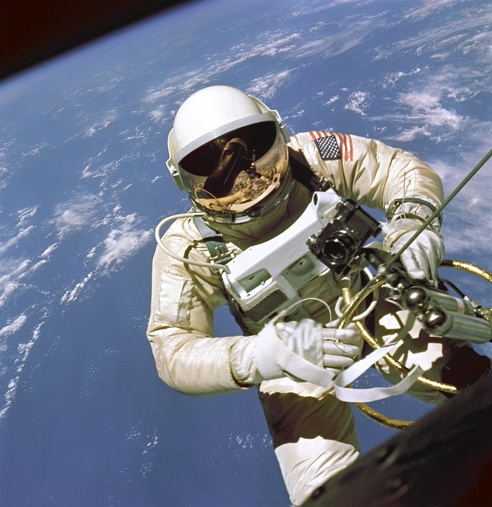

Bienvenido a nuestra emocionante página sobre viajes espaciales. Explora el vasto universo y descubre los misterios que yacen más allá de nuestra atmósfera.
La exploración espacial ha sido una parte fundamental de la historia humana. Desde los primeros vuelos espaciales hasta las misiones interplanetarias, la humanidad siempre ha buscado conocer más acerca del cosmos.
Algunos hitos destacados incluyen:
A continuación, te presentamos algunas imágenes y un video emocionante de la exploración espacial:
Disfruta de este increíble video de la Estación Espacial Internacional (EEI):
¿Tienes preguntas o comentarios? ¡Contáctanos!
Correo electrónico: info@viajesespaciales.com